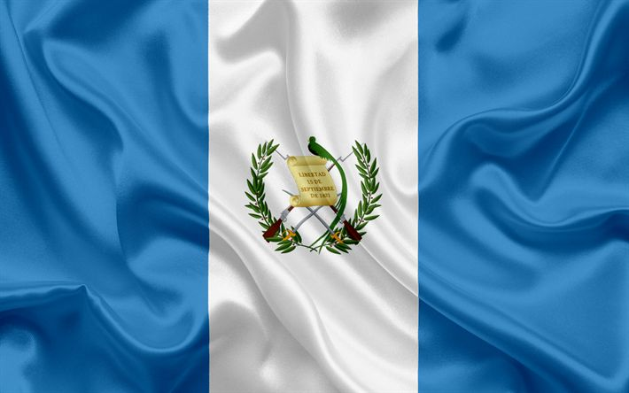

Mynor Alexander Aguirre Cante
About me
Hello my name is Mynor Aguirre, I am from Guatemala, I am currently living in a small town called Fraijanes, and I studying to become a Front End developer, I currently work on Technical support, I have 2 daughters, the oldest is 3 years old, and the youngest 8 months old. Besides coding, one of my favorite passions is to cook.

Guatemala, Guatemala
Guatemala City is the vibrant capital of Guatemala, where modern urban life meets rich history and culture. It is the country’s main economic and cultural hub, offering lively districts, museums, restaurants, and stunning views of nearby volcanoes.